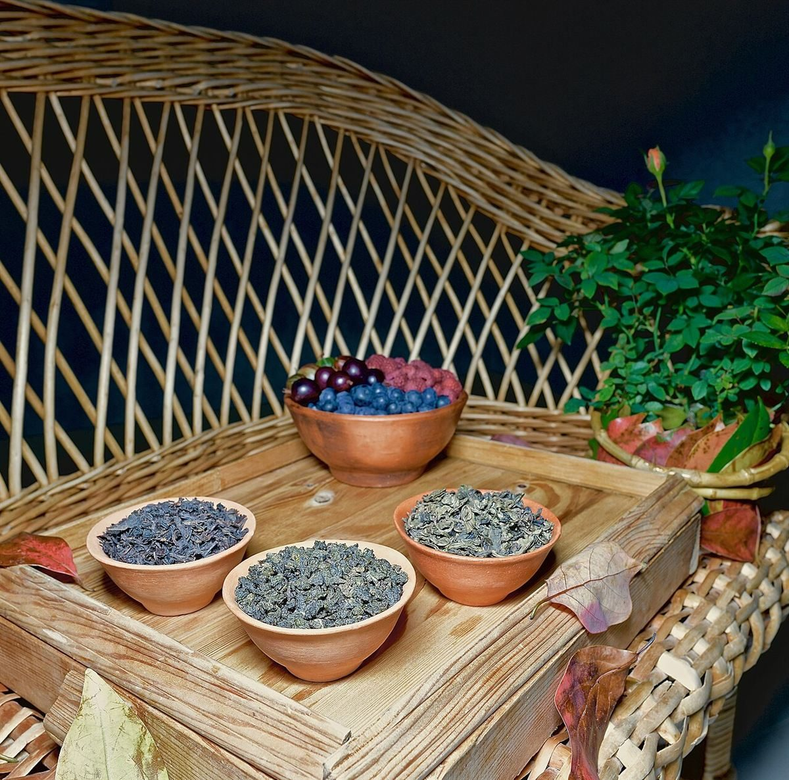

このサイトのテーマ「さかさまで冷ます」
屋号の「シフォン」から、制作側が連想したテーマです。お店の理念・由来とは無関係で、お店の提供内容を示すものでもありません。
ひっくり返して置き、あわてずに冷ます。そんな「ひと呼吸おく時間」を、ページの順番(焼く→逆さ→冷ます→外す→切る)や、見出しの上下反転で表現しました。
04 / 05 型から外す
屋号の「シフォン」から、制作側が連想したテーマです。お店の理念・由来とは無関係で、お店の提供内容を示すものでもありません。
ひっくり返して置き、あわてずに冷ます。そんな「ひと呼吸おく時間」を、ページの順番(焼く→逆さ→冷ます→外す→切る)や、見出しの上下反転で表現しました。



お店のこだわり・歴史・メニューなどは、お話を伺ったうえで掲載します。
最新情報はInstagramをご確認ください。